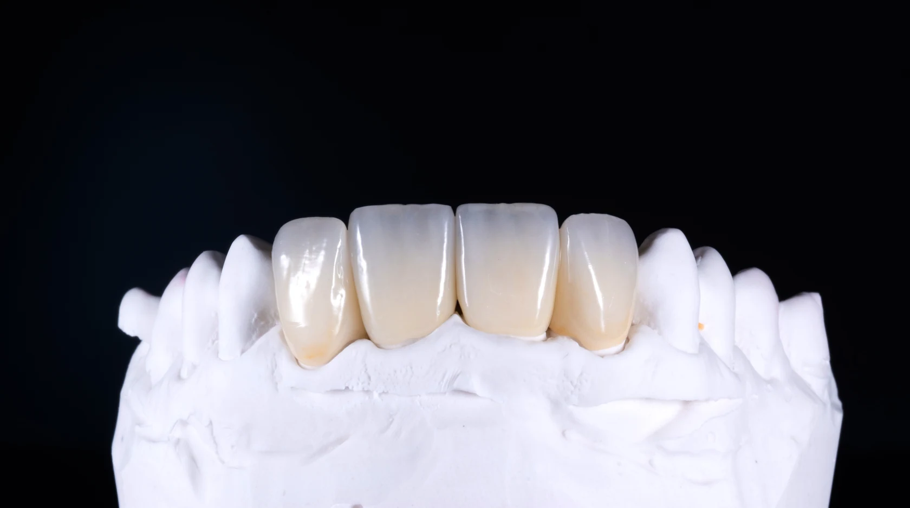
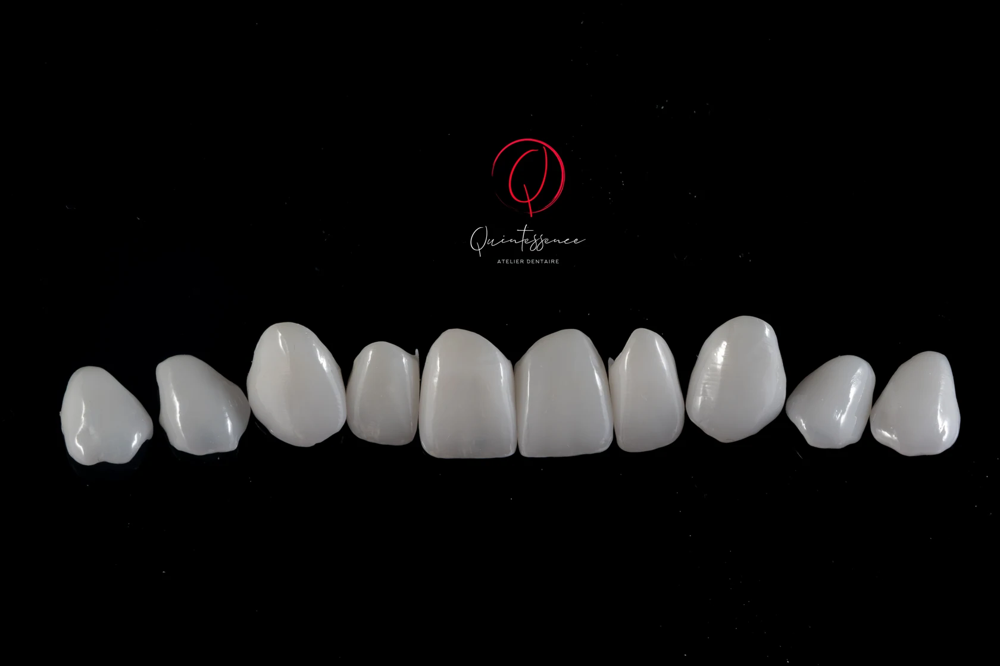

01
Couronnes et Ponts
De la restauration unitaire aux bridges complexes, nous maîtrisons chaque niveau de stratification pour un résultat naturel et durable.
- Zircone monolithique dispersive
- Zircone micro-stratifiée
- Zircone stratifiée

02
Facettes
L'art de la transformation esthétique. Chaque facette est sculptée pour révéler la beauté naturelle du sourire de votre patient.
- Facettes feldspathiques
- Facettes en disilicate de lithium
- Facettes en zircone
- Facettes en composite

03
Plaque Occlusale
Protection et thérapie. Nos plaques occlusales allient confort optimal et efficacité thérapeutique pour le soulagement de vos patients.
- Plaques ImpriméesLégèrement flexibles, parfaites pour la déprogrammation musculaire de l'ATM
- Plaques UsinéesEn résine Therapon Transpa, parfaites pour traiter les troubles temporo-mandibulaires